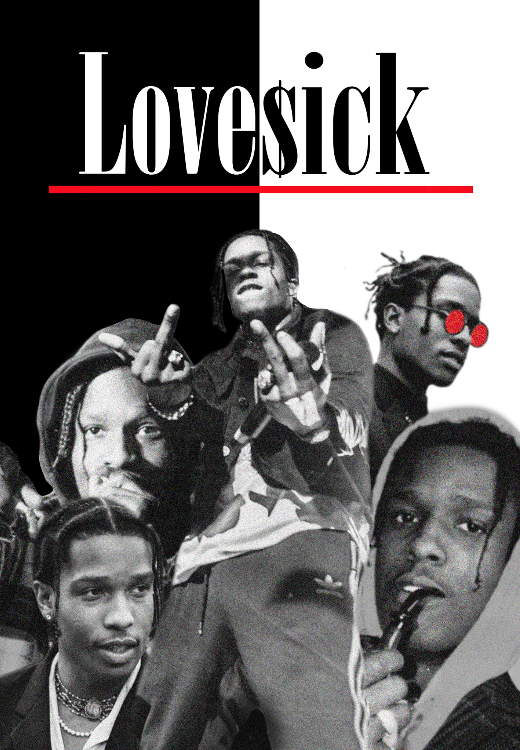

LAB
LAB is an album cover I made using Photoshop back in 2020. Inspiration comes from the BLM -campaign.

LAB is an album cover I made using Photoshop back in 2020. Inspiration comes from the BLM -campaign.
Love$ick is a poster I made for my favorite artist at the time; ASAP Rocky.
(In Finnish, "eilen") is a video I made from GoPro clips. The clips are captured from my and my dad's vacation in Florida back in 2017.